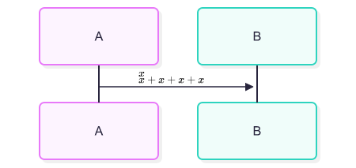
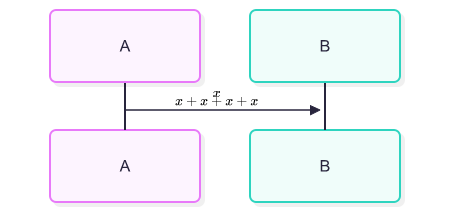

Same input, selected native font context, white background. These PNGs come directly from the CLI; no glyph, viewport or image pixels are edited.
The old binary is bound to its previously committed provenance. The after exports are rebuilt from the audit source state. This comparison covers correctness, not performance.The outline exists, but the old viewport has zero height.
%%{init: {"htmlLabels": true}}%%
flowchart LR
A["$$\smash{𝐀}$$"]
The formula keeps its authored advance and no longer paints over the following prose.
flowchart LR
A["before $$x\rlap{yyyyyyyy}$$ after"]
The foreignObject origin stays fixed; the short formula is centered inside the producer container.
sequenceDiagram A->>B: $$x$$<br/>$$x+x+x+x$$

